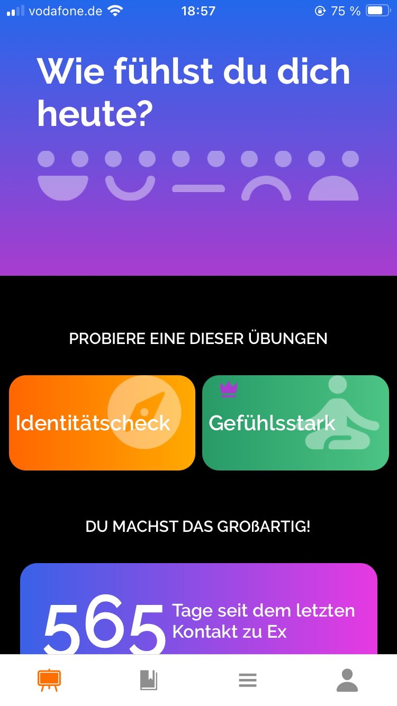

Als Inspiration für unsere Anwendung haben wir uns inhaltlich und visuell von der App Beyond Breakup
und einer Liebeskummer- Hotline inspirieren lassen.
Beyond Breakup hat uns auf die Idee gebracht ein Mood-Tracker in unsere App zu integrieren. Ebenso
haben wir auch ein besseres Gefühl bekommen für den Umfang, den wir in unserer App anbieten wollen.
An der Liebeskummer-Hotline hat uns gefallen, dass man über seine Probleme reden kann. So haben wir
beschlossen, dass wir unseren Usern die Kontakte zu Therapeuten anbieten möchten.
Für die Tagebücher haben wir uns von dem Buch : „5 Minuten-Dankbarkeitstagebuch“ inspirieren lassen.
